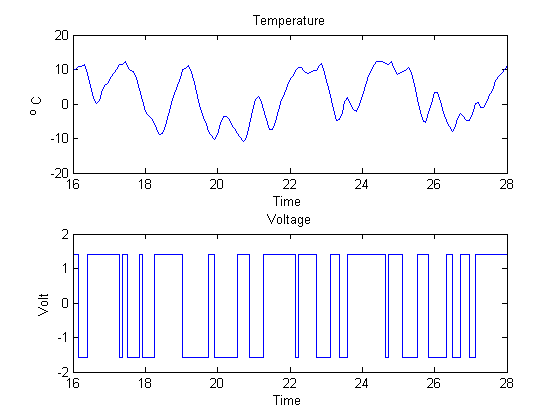
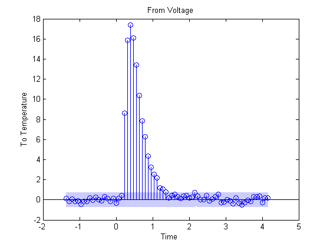
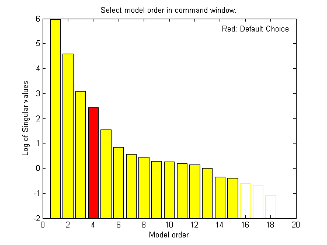
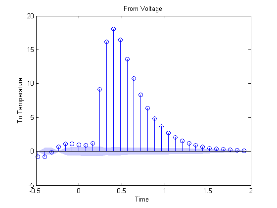
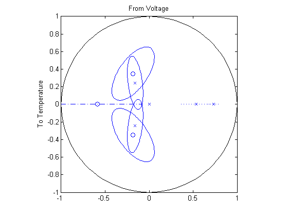
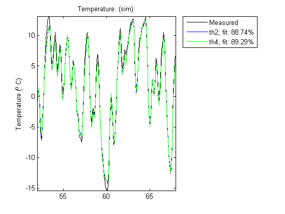
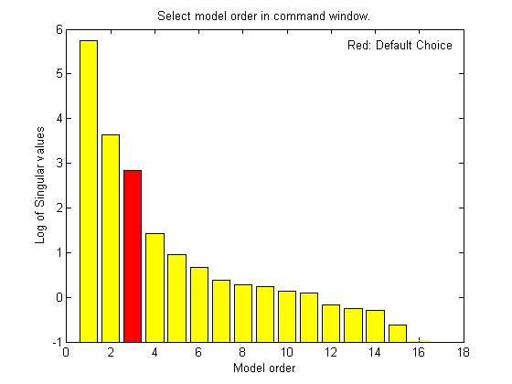

Model Structure Selection: Determining Model Order and Input Delay
Estimation of a model using measurement data requires selection of a model structure (such as state-space or transfer function) and its order (e.g., number of poles and zeros) in advance. This choice is influenced by prior knowledge about the system being modeled, but can also be motivated by an analysis of data itself. This demo describes some options for determining model order and input delay.
Contents
Introduction
Choosing a model structure is usually the first step towards its estimation. There are various possibilities for structure - state-space and polynomial forms such as ARX, ARMAX, OE, BJ etc. If you do not have detailed prior knowledge of your system, such as its noise characteristics and indication of feedback, the choice of a reasonable structure may not be obvious. Also for a given choice of structure, the order of the model needs to be specified before the corresponding parameters are estimated. System Identification Toolbox™ offers some tools and utilities to assist in the task of model order selection.
The choice of a model order is also influenced by the amount of delay. A good idea of the input delay simplifies the task of figuring out the orders of other model coefficients. Discussed below are some options for input delay determination and model structure and order selection.
Choosing and Preparing Example Data for Analysis
The example described here uses the hair dryer data, also used by iddemo1 ("Estimating Simple Models from Real Laboratory Process Data"). The process consists of air being fanned through a tube. The air is heated at the inlet of the tube, and the input is the voltage applied to the heater. The output is the temperature at the outlet of the tube.
Let us begin by loading the measurement data and doing some basic preprocessing:
load dry2
Form a data set for estimation of the first half, and a reference set for validation purposes of the second half:
ze = dry2(1:500); zr = dry2(501:1000);
Detrend each of the sets:
ze = detrend(ze); zr = detrend(zr);
Let us look at a portion of the estimation data:
plot(ze(200:350))
Estimating Input Delay
There are various options available for determining the time delay from input to output. These are:
- Using the DELAYEST utility.
- Using a non-parametric estimate of the impulse response, using IMPULSE.
- Using the state-space model estimator N4SID with a number of different orders and finding the delay of the 'best' one.
Using delayest:
Let us discuss the above options in detail. Function delayest returns an estimate of the delay for a given choice of orders of numerator and denominator polynomials. This function evaluates an ARX structure:
y(t) + a1*y(t-1) + ... + ana*y(t-na) = b1*u(t-nk) + ...+bnb*u(t-nb-nk+1)
with various delays and chooses the delay value that seems to return the best fit. In this process, chosen values of na and nb are used.
delay = delayest(ze) % na = nb = 2 is used, by default
delay =
3
A value of 3 is returned by default. But this value may change a bit if the assumed orders of numerator and denominator polynomials (2 here) is changed. For example:
delay = delayest(ze,5,4)
delay =
2
returns a value of 2. To gain insight into how delayest works, let us evaluate the loss function for various choices of delays explicitly. We select a second order model (na=nb=2), which is the default for delayest, and try out every time delay between 1 and 10. The loss function for the different models are computed using the validation data set:
V = arxstruc(ze,zr,struc(2,2,1:10));
We now select that delay that gives the best fit for the validation data:
[nn,Vm] = selstruc(V,0); % nn is given as [na nb nk]
The chosen structure was:
nn
nn =
2 2 3
which show the best model has a delay of nn(3) = 3.
We can also check how the fit depends on the delay. This information is returned in the second output Vm. The logarithms of a quadratic loss function are given as the first row, while the indexes na, nb and nk are given as a column below the corresponding loss function.
Vm
Vm =
Columns 1 through 7
-0.1297 -1.3151 -1.8793 -0.2349 0.0076 0.0892 0.1951
2.0000 2.0000 2.0000 2.0000 2.0000 2.0000 2.0000
2.0000 2.0000 2.0000 2.0000 2.0000 2.0000 2.0000
1.0000 2.0000 3.0000 4.0000 5.0000 6.0000 7.0000
Columns 8 through 10
0.2077 0.1725 0.1625
2.0000 2.0000 2.0000
2.0000 2.0000 2.0000
8.0000 9.0000 10.0000
The choice of 3 delays is thus rather clear, since the corresponding loss is minimum.
Using impulse
To gain a better insight into the dynamics, let us compute the impulse response of the system. We will use the function impulse to compute a non-parametric impulse response. We plot this response with a confidence interval represented by 3 standard deviations.
impulse(ze,'sd',3,'fill')
The filled light-blue region shows the confidence interval for the insignificant response in this estimation. There is a clear indication that the impulse response "takes off" (leaves the uncertainty region) after 3 samples. This points to a delay of three intervals.
Using n4sid based state-space evaluation We may also estimate a family of parametric models to find the delay corresponding to the "best" model. In case of state-space models, a range of orders may be evaluated simultaneously and user gets prompted to choose the best order. Execute the following command to invoke n4sid in an interactive mode: m = n4sid(ze,1:15); % All orders between 1 and 15.

The plot indicates an order of 4 as the best value. For this choice, let us compute the impulse response of the model m:
m = n4sid(ze,4); impulse(m,'sd',3,'fill')
As with non-parametric impulse response, there is a clear indication that the delay from input to output is of three samples.
Choosing a Reasonable Model Structure
In lack of any prior knowledge, it is advisable to try out various available choices and use the one that seems to work the best. State-space models may be a good starting point since only the number of states needs to be specified in order to estimate a model. Also, a range of orders may be evaluated quickly, using n4sid, for determining the best order, as described in the next section. For polynomial models, a similar advantage is realized using the arx estimator. Output-error (OE) models may also be good choice for a starting polynomial model because of their simplicity.
Determining Model Order
Once you have decided upon a model structure to use, the next task is to determine the order(s). In general, the aim should be to not use a model order higher than necessary. This can be determined by analyzing the improvement in %fit as a function of model order. When doing this, it is advisable to use a separate, independent dataset for validation. Choosing an independent validation data set (zr in our example) would improve the detection of over-fitting.
In addition to a progressive analysis of multiple model orders, explicit determination of optimum orders can be performed for some model structures. Functions arxstruc and selstruc may be used for choosing the best order for ARX models. For our example, let us check the fit for all 100 combinations of up to 10 b-parameters and up to 10 a-parameters, all with a delay value of 3:
V = arxstruc(ze,zr,struc(1:10,1:10,3));
The best fit for the validation data set is obtained for:
nn = selstruc(V,0)
nn =
10 4 3
Let us check how much the fit is improved for the higher order models. For this, we use the function selstruc with only one input. In this case, a plot showing the fit as a function of the number of parameters used is generated. The user is also prompted to enter the number of parameters. The routine then selects a structure with these many parameters that gives the best fit. Note that several different model structures use the same number of parameters. Execute the following command to choose a model order interactively:
nns = selstruc(V) %invoke selstruc in an interactive mode

The best fit is thus obtained for nn = [4 4 3], while we see that the improved fit compared to nn = [2 2 3] is rather marginal.
We may also approach this problem from the direction of reducing a higher order model. If the order is higher than necessary, then the extra parameters are basically used to "model" the measurement noise. These "extra" poles are estimated with a lower level of accuracy (large confidence interval). If their are cancelled by a zero located nearby, then it is an indication that this pole-zero pair may not be required to capture the essential dynamics of the system.
For our example, let us compute a 4th order model:
th4 = arx(ze,[4 4 3]);
Let us check the pole-zero configuration for this model. We can also include confidence regions for the poles and zeros corresponding to 3 standard deviations, in order to determine how accurately they are estimated and also how close the poles and zeros are to each other.
zpplot(th4,3)
The confidence intervals for the two complex-conjugate poles and zeros overlap, indicating they are likely to cancel each other. Hence, a second order model might be adequate. Based on this evidence, let us compute a 2nd order ARX model:
th2 = arx(ze,[2 2 3]);
We can test how well this model (th2) is capable of reproducing the validation data set. To compare the simulated output from the two models with the actual output (plotting the mid 200 data points) we use the compare utility:
compare(zr(150:350),th2,th4)
The plot indicates that there was no significant loss of accuracy in reducing the order from 4 to 2. We can also check the residuals ("leftovers") of this model, i.e., what is left unexplained by the model.
e = resid(ze,th2);
plot(e(:,1,[])), title('The residuals')

We see that the residuals are quite small compared to the signal level of the output, that they are reasonably well (although not perfectly) uncorrelated with the input and among themselves. We can thus be (provisionally) satisfied with the model th2.
Let us now check if we can determine the model order for a state-space structure. As before, we know the delay is 3 samples. We can try all orders from 1 to 15 with a fixed delay of 3 in n4sid. Execute the following command to try various orders and choose one interactively.
ms = n4sid(ze,[1:15],'nk',3); %n4sid estimation with variable orders

The default order, indicated in the figure above, is 3, that is in good agreement with our earlier findings. Finally, we compare how the state-space model ms and the ARX model th2 compare in reproducing the measured output of the validation data:
ms = n4sid(ze,3,'nk',3);
compare(zr,ms,th2)

The comparison plot indicates that the two models are practically identical.
Conclusions
This demo described some options for how to go about choosing a reasonable model order. Determining delay in advance can simplify the task of choosing orders. With ARX and state-space structures, we have some special tools (arx and n4sid estimators) for automatically evaluating a whole set of model orders, and choosing the best one among them. The information revealed by this exercise (using utilities such as arxstruc, selstruc, n4sid and delayest) could be used as a starting point when estimating models of other structures, such as BJ and ARMAX.
Additional Information
For more information on identification of dynamic systems with System Identification Toolbox visit the System Identification Toolbox product information page.